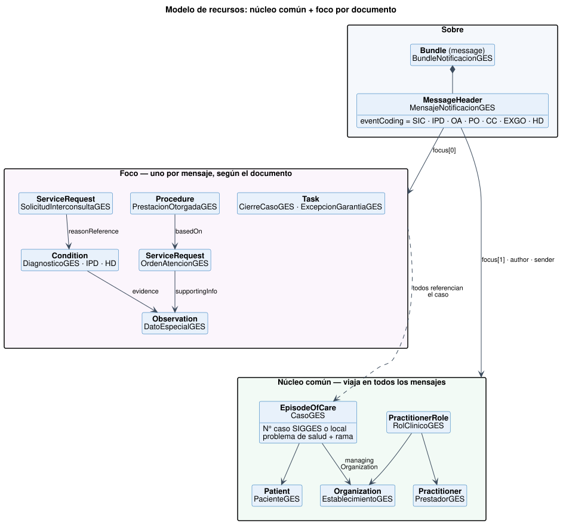

Notificación de Casos GES a SIGGES 2.0
0.4.0 - ci-build

Notificación de Casos GES a SIGGES 2.0
0.4.0 - ci-build

Notificación de Casos GES a SIGGES 2.0 - Local Development build (v0.4.0) built by the FHIR (HL7® FHIR® Standard) Build Tools. See the Directory of published versions

Estos recursos viajan en todos los mensajes. Resuelven de una sola vez los campos que la API v1.5 repite en cada documento.
| Perfil | Base | Resuelve (API v1.5) |
|---|---|---|
| PacienteGES | NID MINSALPaciente |
runPaciente, dvPaciente, nombres, apellidos, sexo, fecha de nacimiento, dirección, comuna, región, fono, email |
| PrestadorGES | CL Core CorePrestadorCl, con la regla de identificador de NID (D-003) |
runProfesional, dvProfesional, nombres y apellidos del profesional |
| EstablecimientoGES | NID MINSALPrestadorOrganizacional |
deisOrigen, deisEstablecimientoOtorga/Destino, tipoDeisOrigen. El Servicio de Salud se deriva del catálogo |
| RolClinicoGES | CL Core CoreRolClinicoCl |
Quién (profesional), dónde (establecimiento que otorga) y en qué especialidad (especialidadOrigen) |
| CasoGES | EpisodeOfCare | problemaSalud, ramaProblemaSalud (obligatoria, D-020), número de caso SIGGES o local, estado del caso; programa GES en SNOMED CT opcional |
La identidad sigue la jerarquía del portafolio: FHIR R4 → CL Core → NID → esta guía. El paciente y el establecimiento derivan de los perfiles de NID, igual que en las guías de Laboratorio e Imagenología. El profesional queda en CL Core porque el perfil de NID es el del registro de prestadores y exige datos que la API v1.5 no trae (fecha de nacimiento, título); de NID se adopta la forma de identificarlo: RUN oficial, con su tipo y su sistema.
| Perfil | Base | Notas |
|---|---|---|
| DiagnosticoGES | CL Core CoreDiagnosticoCl |
Base de SIC (motivo), IPD y HD. verificationStatus = confirma / sospecha / descarta |
| InformeProcesoDiagnosticoGES | DiagnosticoGES | + establecimiento de destino; datos por PS en evidence.detail |
| HojaDiariaGES | DiagnosticoGES | + estado de hoja diaria (específico por rama) |
| SolicitudInterconsultaGES | ServiceRequest | derivadaPara en category; destino en performer y performerType |
| OrdenAtencionGES | ServiceRequest | prestación en code; garantía en extensión; datos especiales en supportingInfo |
| PrestacionOtorgadaGES | Procedure | performedPeriod = fechaRealizacion / fechaFin; basedOn → OA |
| CierreCasoGES | Task | causal en statusReason; focus → caso |
| ExcepcionGarantiaGES | Task | garantía en extensión; causal y justificación en statusReason |
| GarantiaOportunidadGES | Task | La publica SIGGES; plazo en restriction.period |
| DatoEspecialGES | Observation | Mecanismo de crecimiento por problema de salud |
| Extensión | Dónde | Por qué no hay un elemento estándar |
|---|---|---|
| ExtCasoGES | ServiceRequest, Procedure, Condition | En R4 estos recursos no tienen referencia al episodio |
| ExtGarantiaGES | ServiceRequest, Procedure, Task | Concepto propio del GES |
| ExtIndicacionesClinicas | Condition | Texto libre de tratamiento e indicaciones (indicacionExamen) |
| ExtEstablecimientoDestino | Condition | Destino de la atención tras el IPD |
| ExtEstadoHojaDiaria | Condition | Estado HD específico por rama (catálogo ESTADOS HD) |
| Necesidad futura | Qué se hace | Qué no cambia |
|---|---|---|
| Nuevo dato para un problema de salud (p.ej. estadio TNM, HbA1c, peso) | Se agrega un código a CSDatoEspecialGES y se envía como Observation | Perfiles, API y demás documentos |
| Nuevo documento SIGGES | Se agrega un código a CSTipoDocumentoSIGGES y un perfil de foco delgado | Núcleo común, sobre y respuesta |
| Nuevo decreto GES (ramas, garantías) | Se regeneran los CodeSystems desde el catálogo (tools/catalogo2fsh.py), con vigencia por concepto |
Instancias ya emitidas |
| Codificación clínica (CIE-10, SNOMED CT) | Se agrega un coding adicional en Condition.code (slice cie10 ya disponible) |
El problema de salud GES sigue obligatorio |
| FONASA expone un endpoint FHIR | Los establecimientos siguen enviando el mismo Bundle y se retira el traductor | Todo lo que emite el establecimiento |
| Reportes y analítica | Los recursos son clínicos estándar: se pueden reutilizar en la Historia Clínica Compartida o en un repositorio | — |
Regla de oro. Si un requerimiento nuevo lleva a agregar un campo a un perfil existente, antes hay que preguntarse si es un dato clínico (Observation), un código (CodeSystem) o un documento (evento nuevo).